<meta name="viewport" content="width=device-width, initial-scale=1">
<link rel="stylesheet" href="github-markdown.css">
<style>
	.markdown-body {
		box-sizing: border-box;
		min-width: 200px;
		max-width: 980px;
		margin: 0 auto;
		padding: 45px;
	}

	@media (max-width: 767px) {
		.markdown-body {
			padding: 15px;
		}
	}
</style>
<article class="markdown-body">


<h1 id="materials-and-shading-workshop">Materials and Shading Workshop</h1>
<p>Prof. Dr. Lena Gieseke | l.gieseke@filmuniversitaet.de | Film University Babelsberg <em>KONRAD WOLF</em></p>
<h2 id="day-2">Day 2</h2>
<ul>
<li><a href="#materials-and-shading-workshop">Materials and Shading Workshop</a>
<ul>
<li><a href="#day-2">Day 2</a></li>
<li><a href="#today">Today</a></li>
<li><a href="#recap">Recap</a>
<ul>
<li><a href="#insight-1-we-describe-the-scene-setup-with-vectors"><strong><em>Insight 1:</em></strong> We describe the scene setup with vectors</a></li>
<li><a href="#insight-2-we-iterate-over-all-lights-and-sum-up-their-contribution"><strong><em>Insight 2:</em></strong> We iterate over all lights and sum up their contribution</a></li>
<li><a href="#insight-3-we-work-with-numeric-properties-for-the-lights"><strong><em>Insight 3:</em></strong> We work with numeric properties for the lights</a></li>
<li><a href="#lamberts-cosine-law">Lambert’s Cosine Law</a></li>
<li><a href="#diffuse-reflection">Diffuse Reflection</a></li>
<li><a href="#insight-4-lambert-material"><strong><em>Insight 4:</em></strong> Lambert Material</a></li>
</ul></li>
<li><a href="#the-shader-pipeline">The Shader Pipeline</a>
<ul>
<li><a href="#vertext--fragment-shader">Vertext / Fragment Shader</a></li>
</ul></li>
<li><a href="#p5-scene-setup">p5 Scene Setup</a></li>
<li><a href="#lets-implement-shininess-️">Let’s Implement Shininess ☀️</a>
<ul>
<li><a href="#specular-reflection">Specular Reflection</a></li>
<li><a href="#specular-reflection---shininess-exponent">Specular Reflection - Shininess exponent</a></li>
<li><a href="#specular-material">Specular Material</a></li>
<li><a href="#phong-model">Phong Model</a></li>
</ul></li>
<li><a href="#local-illumination">Local Illumination</a>
<ul>
<li><a href="#bidirectional-reflectance-distribution-functions-brdf">Bidirectional Reflectance Distribution Functions (BRDF)</a></li>
<li><a href="#how-do-we-get-brdfs">How Do We Get BRDFs?</a></li>
</ul></li>
<li><a href="#global-illumination">Global Illumination</a>
<ul>
<li><a href="#rendering-equation">Rendering Equation</a></li>
</ul></li>
<li><a href="#toon">Toon</a></li>
<li><a href="#shading-inspirations-">Shading Inspirations 🤩</a></li>
<li><a href="#the-end-of-day-2">The End of Day 2</a></li>
</ul></li>
</ul>
<h2 id="today">Today</h2>
<p>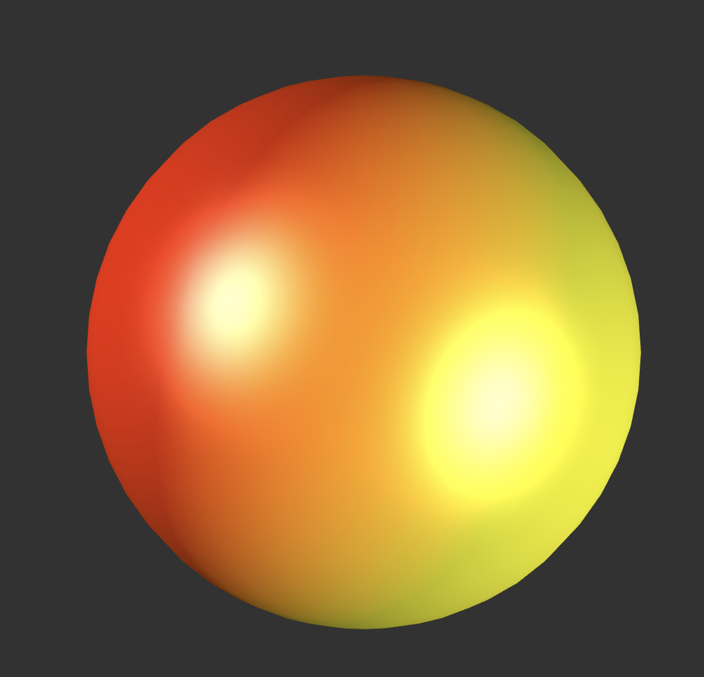<br />
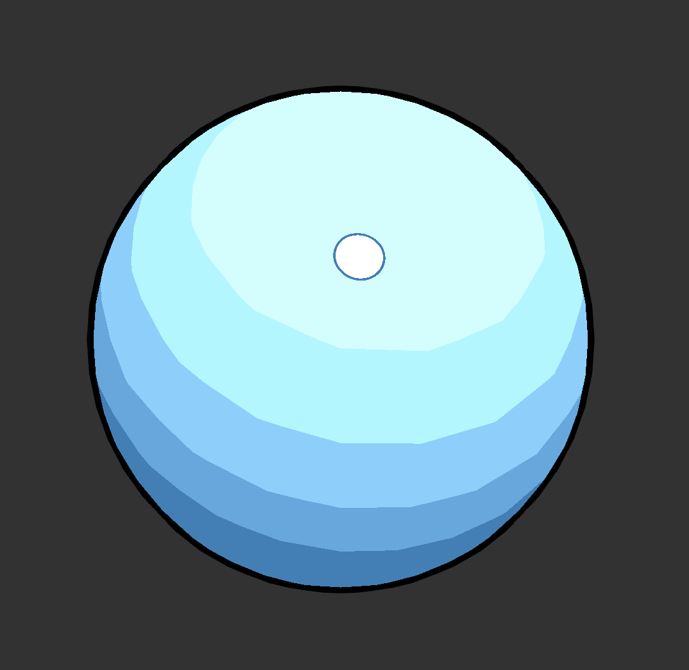</p>
<p>👩🏽‍💻 🧑🏻‍💻 👩🏼‍💻</p>
<ul>
<li>Implementation of p5’s shading functionalities</li>
<li>NPR Materials, Example: Toon</li>
</ul>
<h2 id="recap">Recap</h2>
<h3 id="insight-1-we-describe-the-scene-setup-with-vectors"><strong><em>Insight 1:</em></strong> We describe the scene setup with vectors</h3>
<p>We interpret the light transport as the radiance traveling along rays, where</p>
<ul>
<li><span class="math inline"><em>L</em></span> points to the direction the light is coming from,</li>
<li><span class="math inline"><em>V</em></span> points to the observer and is the direction the light is reflected towards.</li>
</ul>
<p><span class="math inline">||<em>L</em>|| = ||<em>V</em>|| = 1</span></p>
<p>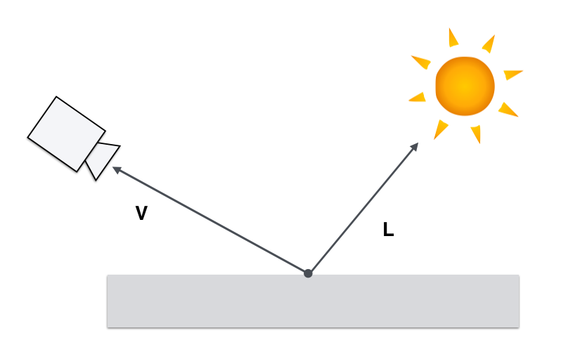]</p>
<h3 id="insight-2-we-iterate-over-all-lights-and-sum-up-their-contribution"><strong><em>Insight 2:</em></strong> We iterate over all lights and sum up their contribution</h3>
<p>This is based on the physical fact that the contribution of each light adds up linearly. This means that the contribution of each light just needs to be <strong>summed up</strong>.</p>
<p></p>
<p><a href="https://www.scratchapixel.com/lessons/3d-basic-rendering/introduction-to-shading/shading-multiple-lights">[Scratchapixel]</a></p>
<h3 id="insight-3-we-work-with-numeric-properties-for-the-lights"><strong><em>Insight 3:</em></strong> We work with numeric properties for the lights</h3>
<p>The computation of the different light intensities, e.g. for a spot light is given by formulas. Today we do not consider these.</p>
<p>Today we work with (for the sake of simplicity):</p>
<ul>
<li>a constant rgb-color for the ambient light, and</li>
<li>a direction vector and a constant rgb-color for each directional light.</li>
</ul>
<h3 id="lamberts-cosine-law">Lambert’s Cosine Law</h3>
<p>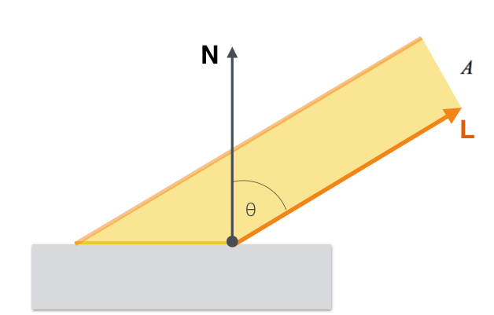]</p>
<p>The value of <span class="math inline"><em>c</em><em>o</em><em>s</em><em>θ</em></span> is given by the dot product between the normal vector <span class="math inline"><em>N</em></span> and the unit direction to the light source <span class="math inline"><em>L</em></span>.</p>
<p><span class="math inline"><em>c</em><em>o</em><em>s</em><em>θ</em> = <em>L</em> ∙ <em>N</em></span></p>
<h3 id="diffuse-reflection">Diffuse Reflection</h3>
<p>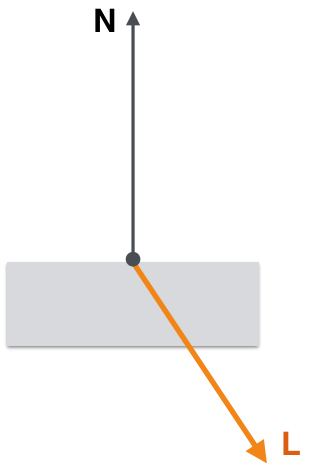]</p>
<p>A negative dot product means that the surface is facing away from the light source and should not be illuminated at all.</p>
<p>Thus, we clamp the dot product to zero in our illumination calculations.</p>
<p><span class="math inline"><em>m</em><em>a</em><em>x</em>(<em>L</em> ∙ <em>N</em>, 0)</span></p>
<h3 id="insight-4-lambert-material"><strong><em>Insight 4:</em></strong> Lambert Material</h3>
<p>In order to compute a diffuse or lambertian material model, we simply use</p>
<div class="sourceCode" id="cb1"><pre class="sourceCode js"><code class="sourceCode javascript"><a class="sourceLine" id="cb1-1" title="1">light_diffuse <span class="op">*</span> <span class="at">max</span>(L ∙ N<span class="op">,</span> <span class="dv">0</span>)<span class="op">;</span></a></code></pre></div>
<p><em>Reminder:</em> <code>light_diffuse</code> is a rgb color in our context.</p>
<h2 id="the-shader-pipeline">The Shader Pipeline</h2>
<p></p>
<ul>
<li>The 3D engine / host program fills OpenGL-managed memory buffers with arrays of vertices</li>
<li>These vertices are projected into screen space, assembled into triangles, and rasterized into pixel-sized fragments.</li>
<li>Finally, the fragments are assigned color values and drawn to the framebuffer.</li>
</ul>
<p><a href="https://www.enlightenment.org/playground/evas-gl.md">[Evas GL Programming Guide]</a></p>
<h3 id="vertext-fragment-shader">Vertext / Fragment Shader</h3>
<p>The rasterization step takes each triangle from the triangle assembly, clips it and discards the parts located outside of the screen.</p>
<p>The remaining visible parts are then broken into pixel-sized fragments.</p>
<p>The vertex shader’s varying outputs are also interpolated across the rasterized surface of each triangle, assigning a smooth gradient of values to each fragment.</p>
<p>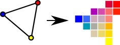</p>
<p>If the vertex shader assigns a color value to each vertex, for instance, the rasterizer will blend those colors across the pixelated surface.</p>
<p><a href="https://www.enlightenment.org/playground/evas-gl.md">[Evas GL Programming Guide]</a></p>
<p>Keep in mind that Shaders are mini-programmes compiled to run on the GPU.</p>
<p>The GPU has lots of processors and each rendering stage is or can be split into many separate calculations, for example to compute each fragment.</p>
<p></p>
<p>This means that we compute the rendering in parallel - which makes it much faster than doing it with a CPU-based software renderer where we only have 1-8 processors.</p>
<p><a href="http://antongerdelan.net/opengl/shaders.html">[Anton Gerdelan]</a></p>
<h2 id="p5-scene-setup">p5 Scene Setup</h2>
<p>The given scene gives the environment for learning to implement basic shading algorithms. It includes</p>
<ul>
<li>Ambient light</li>
<li>Directional, colored lights</li>
<li>Ambient material</li>
<li>Specular material</li>
</ul>
<p>p5 has some behavioral specifics but these are straight-forward to understand. The general concepts should be similar in any other 3D rendering context, e.g. in Unity.</p>
<h2 id="lets-implement-shininess">Let’s Implement Shininess ☀️</h2>
<h3 id="specular-reflection">Specular Reflection</h3>
<p>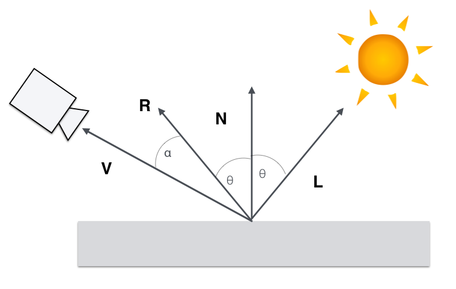]</p>
<p>A model that recreates believable (but having almost no real physical basis) specular highlights uses again the cos function for modulation.</p>
<p> 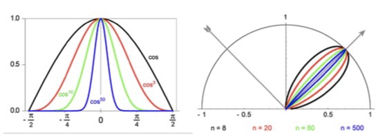]</p>
<p><span class="math inline"><em>c</em><em>o</em><em>s</em><sup><em>n</em></sup><em>α</em> = <em>m</em><em>a</em><em>x</em>(0, <em>R</em> ⋅ <em>V</em>)<sup><em>n</em></sup></span></p>
<p>With n as a <em>shininess</em> exponent.</p>
<h3 id="specular-reflection---shininess-exponent">Specular Reflection - Shininess exponent</h3>
<p>The specular or shininess exponent n controls the sharpness of the specular highlight.</p>
<p>]</p>
<h3 id="specular-material">Specular Material</h3>
<p>Now, we can compute the specular component of a shading model with</p>
<div class="sourceCode" id="cb2"><pre class="sourceCode glsl"><code class="sourceCode glsl"><a class="sourceLine" id="cb2-1" title="1">light_specular * <span class="bu">max</span>(<span class="dv">0</span>, R ∙ V)^n;</a></code></pre></div>
<p>A basic specular model could therefore look like:</p>
<div class="sourceCode" id="cb3"><pre class="sourceCode glsl"><code class="sourceCode glsl"><a class="sourceLine" id="cb3-1" title="1">light_ambient + shading_diffuse + light_specular * <span class="bu">max</span>(<span class="dv">0</span>, R ∙ V)^n;</a></code></pre></div>
<h3 id="phong-model">Phong Model</h3>
<p>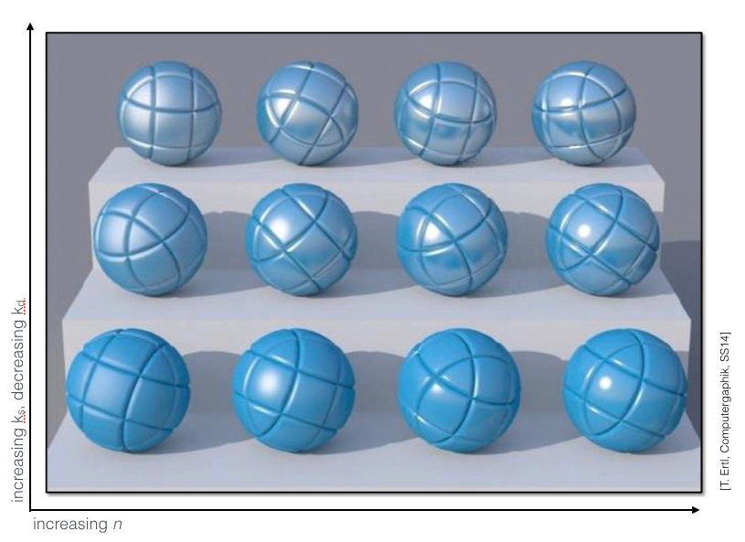]</p>
<p><span class="math inline"><em>I</em><sub><em>P</em><em>h</em><em>o</em><em>n</em><em>g</em></sub> = <em>I</em><sub><em>A</em></sub> + <em>I</em><sub><em>D</em></sub> + <em>I</em><sub><em>S</em></sub></span></p>
<p>With the components modelled as</p>
<p><span class="math inline"><em>I</em><sub><em>A</em><em>m</em><em>b</em><em>i</em><em>e</em><em>n</em><em>t</em></sub> = <em>k</em><sub><em>a</em></sub></span></p>
<p><span class="math inline"><em>I</em><sub><em>D</em><em>i</em><em>f</em><em>f</em><em>u</em><em>s</em><em>e</em></sub> = <em>k</em><sub><em>d</em></sub><em>m</em><em>a</em><em>x</em>(<em>N</em> ⋅ <em>L</em>, 0)</span></p>
<p><span class="math inline"><em>I</em><sub><em>S</em><em>p</em><em>e</em><em>c</em><em>u</em><em>l</em><em>a</em><em>r</em></sub> = <em>k</em><sub><em>s</em></sub><em>m</em><em>a</em><em>x</em>(<em>R</em> ⋅ <em>V</em>, 0)<sup><em>n</em></sup></span></p>
<p>For an incoming light I</p>
<p><span class="math inline"><em>I</em><sub><em>P</em><em>h</em><em>o</em><em>n</em><em>g</em></sub> = <em>k</em><sub><em>a</em></sub> + <em>k</em><sub><em>s</em></sub><em>m</em><em>a</em><em>x</em>(<em>R</em> ⋅ <em>V</em>, 0)<sup><em>n</em></sup><em>I</em> + <em>k</em><sub><em>s</em></sub><em>m</em><em>a</em><em>x</em>(<em>R</em> ⋅ <em>V</em>, 0)<sup><em>n</em></sup><em>I</em></span></p>
<p><em>A BRDF computes the ratio of the incoming to the exiting light.</em></p>
<p>In summary, for shading a surface with the Phong material, we compute how much of the incoming light intensity is reflected on a surface point for a certain view vector, based on the Phong formula.</p>
<p>Let’s Implement This! 👩🏽‍💻 🧑🏻‍💻</p>
<h2 id="local-illumination">Local Illumination</h2>
<p>To describe the reflectance behavior on a surface point there are various different <strong><em>Bidirectional Reflectance Distribution Functions (BRDF)</em></strong>.</p>
<p>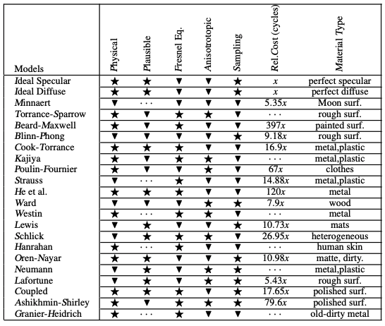<a href="https://digibug.ugr.es/bitstream/handle/10481/19751/rmontes_LSI-2012-001TR.pdf">[Montes 2012]</a>]</p>
<h3 id="bidirectional-reflectance-distribution-functions-brdf">Bidirectional Reflectance Distribution Functions (BRDF)</h3>
<p>The BRDF <span class="math inline"><em>f</em>(<em>ω</em><sub>i</sub>, <em>ω</em><sub>r</sub>)</span> is a function of four variables:</p>
<p> <a href="https://en.wikipedia.org/wiki/Bidirectional_reflectance_distribution_function">[Wikipedia]</a>]</p>
<p><span class="math inline"><em>ω</em><sub>i</sub></span> and <span class="math inline"><em>ω</em><sub>r</sub></span> are equivalent to <strong>L</strong> and <strong>R</strong>.</p>
<p>The BRDF returns the <em>ratio</em> of incoming irradiance to reflected radiance.</p>
<p>By computing the value of a given BRDF for all surface points, we have a description of the surface’s shading behavior.</p>
<p>Where are BRDFs coming from?</p>
<ul>
<li>Measured from material samples using calibrated cameras and lightsources
<ul>
<li>In tabular form: expensive, requires interpolation for rendering</li>
<li>Editing is difficult</li>
</ul></li>
</ul>
<h3 id="how-do-we-get-brdfs">How Do We Get BRDFs?</h3>
<ul>
<li>Measured from material samples using calibrated cameras and lightsources
<ul>
<li>In tabular form: expensive, requires interpolation for rendering</li>
<li>Editing is difficult</li>
</ul></li>
</ul>
<p> <a href="https://www.merl.com/brdf/">[Matusik 2003]</a>]</p>
<ul>
<li>Phenomenologically motivated models
<ul>
<li>Few, intuitive parameters</li>
<li>Only limited realism</li>
<li>Phong [1975], Blinn-Phong [1977], Ward [1992], Lafortune et al. [1997], Ashikhmin et al. [2000],…</li>
</ul></li>
<li>Physically motivated models
<ul>
<li>More exact results</li>
<li>Tuning parameters more difficult</li>
<li>Cook-Torrance [1981], He et al. [1991]</li>
</ul></li>
<li>Hybrid models
<ul>
<li>Maximize artist ease-of-use</li>
<li>Physical realism</li>
<li><em>Disney</em>-BRDF [Burley 2012a] / [Burley 2012b]</li>
</ul></li>
</ul>
<p>The previously mentioned BRDFs were all models for the “simple” case of</p>
<p></p>
<p>But what about:</p>
<p>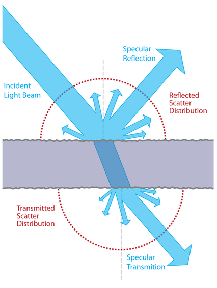</p>
<p>BSDF (bidirectional scattering distribution function)</p>
<p><a href="https://www.wikiwand.com/en/Bidirectional_scattering_distribution_function">[wiki]</a></p>
<p>BSSRDF (Bidirectional scattering-surface reflectance distribution function or Bidirectional surface scattering RDF)</p>
<p><a href="https://www.wikiwand.com/en/Bidirectional_scattering_distribution_function">[wiki]</a></p>
<p>More variables are needed!</p>
<p></p>
<p>Well, local illumination is nice and well but what is missing?</p>
<p></p>
<h2 id="global-illumination">Global Illumination</h2>
<p>We need light from all directions!</p>
<p></p>
<h3 id="rendering-equation">Rendering Equation</h3>
<p>How much light is emitted and reflected on surface point x?</p>
<p></p>
<p>Light from all directions…</p>
<p>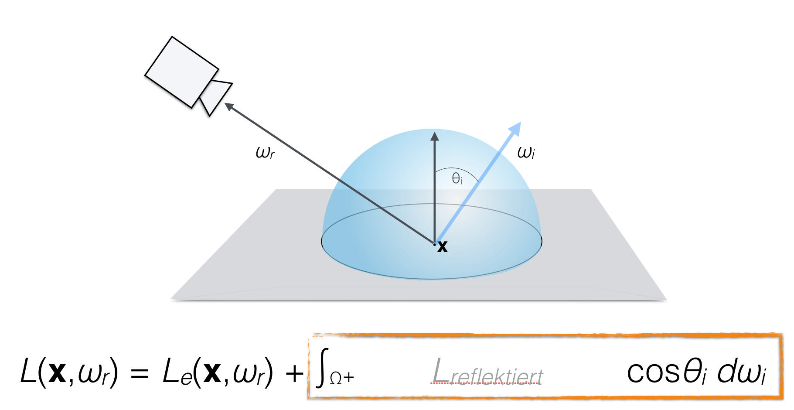</p>
<p>Reflectance?</p>
<p>BRDF!</p>
<p>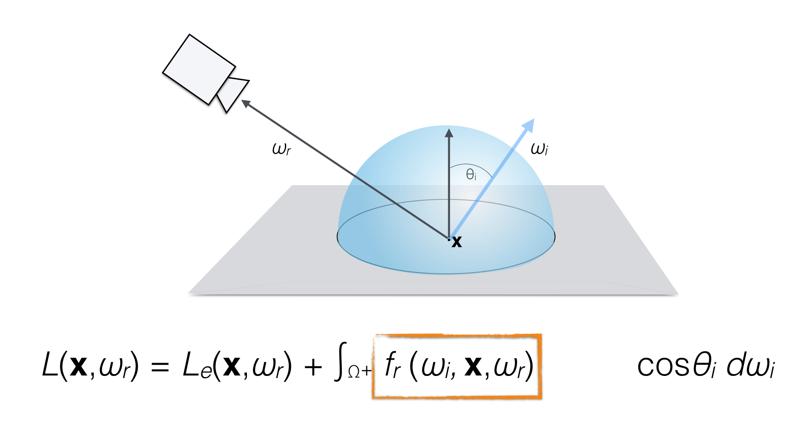</p>
<p>BRDF with what? Which light do we get?</p>
<p></p>
<p>Bad news:</p>
<p>The incoming light in x is the rendering equation of y…</p>
<p></p>
<p>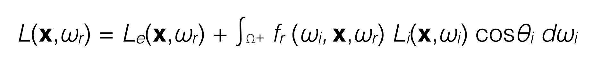</p>
<p>Infinite-dimensional!</p>
<p></p>
<p>Once again, ‘solutions’ are acceptable approximations…</p>
<p></p>
<ul>
<li>Monte-Carlo Ray and Path Tracing
<ul>
<li>Stochastic integral solutions</li>
<li>Noise from variance in stochastic processes</li>
</ul></li>
<li>Photon Mapping
<ul>
<li>Distribute light particles in scene, then ray tracing</li>
<li>Good for spatially focused light effects such as caustics</li>
</ul></li>
<li>Radiosity
<ul>
<li>Finite element method: surfaces each divided up into one or more smaller surfaces</li>
<li>Light is simulated between patches based on a view factor</li>
<li>Reduces the infinite dimensional rendering equation to a finite number of dimensions</li>
<li>Efficient for overall smooth lighting and reflections</li>
</ul></li>
</ul>
<p>Well that was a bummer…</p>
<p>Now, let’s have some fun… Toon</p>
<h2 id="toon">Toon</h2>
<ul>
<li>Flat shading</li>
<li>Step function for diffuse shading</li>
<li>Outline</li>
<li>Small light highlight</li>
<li>Outline around highlight</li>
</ul>
<p>Let’s Implement This! 👩🏽‍💻 🧑🏻‍💻</p>
<h2 id="shading-inspirations">Shading Inspirations 🤩</h2>
<ul>
<li><a href="https://shaderoo.org/?shader=yMP3J7">Ballpoint Shader</a></li>
<li><a href="http://www.reynantemartinez.com/cycles-material-studies.html">Cycles Material Studies</a></li>
<li><a href="https://hasenjager.cgsociety.org/zkgx/material-studies-met">Material Studies - Metal</a></li>
<li><a href="https://hasenjager.cgsociety.org/w3p3/material-studies-sno">Material Studies - Snow</a></li>
<li><a href="https://www.behance.net/gallery/74271431/Material-Studies-Minerals">Material Studies - Minerals</a></li>
<li><a href="https://www.artstation.com/artwork/q08rL">Decay in Unreal</a></li>
</ul>
<hr />
<h2 id="the-end-of-day-2">The End of Day 2</h2>
<p>🤯</p>

</article>

